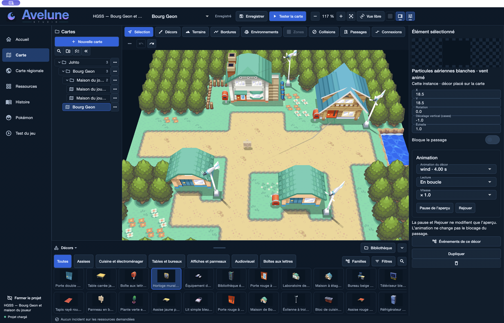

Noir & Blanc 2
Modèles 3D, décors et pinceaux modulaires. Explorez les ressources d’Unys.
Explorer la bibliothèque
Créez votre RPG en 2D ou en 3D avec Avelune, un éditeur visuel pour construire votre monde et raconter vos histoires.
Bourg Geon · Création en 3D dans Avelune Studio
Construisez vos villes, vos routes et vos intérieurs en pixel art 2D ou avec des décors 3D. Composez votre région, un détail à la fois.
Donnez une voix à vos personnages, écrivez leurs conversations et reliez les événements qui font avancer votre histoire.
DANS LES COULISSES D’AVELUNE
En 2D comme en 3D, des projets créés avec Avelune. Découvrez leurs mondes et les outils qui leur donnent vie.
Forêts, rivières et chemins prennent forme en pixel art. La carte de Bond Bridge montre la création de mondes en 2D dans Avelune Studio.
Composez aussi des scènes en 3D. Retrouvez vos décors, vos terrains et vos animations dans le même espace de création visuel.
Écrivez vos conversations dans l’éditeur de dialogue, reliez vos scènes et essayez l’échange au fil de votre création.
Lancez un test depuis Studio pour explorer vos scènes. Retrouvez les lieux que vous construisez du point de vue du joueur.
DES PIÈCES POUR VOS PROCHAINS MONDES
Parcourez les bibliothèques de ressources existantes et trouvez les décors de votre prochaine carte.
Modèles 3D, décors et pinceaux modulaires. Explorez les ressources d’Unys.
Explorer la bibliothèque
Le charme de Kanto en pixels. Découvrez ses décors, ses terrains et ses chemins.
Explorer la bibliothèqueVOTRE PROCHAINE AVENTURE COMMENCE ICI
Téléchargez Avelune Studio, explorez l’éditeur et commencez à composer votre RPG. Avelune est en développement actif.
Télécharger StudioVersions publiées pour macOS, Windows et Linux. Les détails de téléchargement et les notes de version sont disponibles sur GitHub.
Oui. Avelune se spécialise actuellement dans la création de RPG Pokémon, avec des outils visuels pour les cartes, les histoires et les données dédiées aux Pokémon.
Oui. Les captures montrent la carte de Bond Bridge en 2D, Bourg Geon en 3D, l’éditeur de dialogue et le mode test d’Avelune Studio. Sélectionnez une image pour voir la capture complète.
Le catalogue Avelune Packages rassemble les bibliothèques, leurs aperçus et les instructions d’import. Vous pouvez l’explorer avant de télécharger un package.
Suivez les versions publiées de Studio et découvrez ce qui évolue au fil du développement.